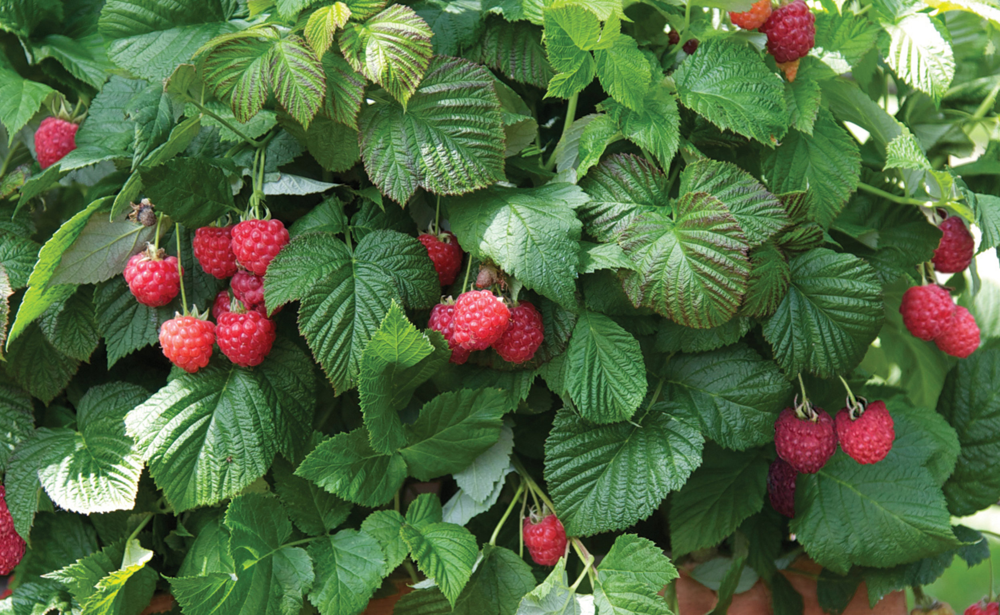

Raspberry World
Home
Varieties
Growing
Recipes
About the author
Tips for Growing Raspberries

Choose a sunny location with well-draining soil
Plant raspberries in early spring
Water regularly, especially during fruit development
Prune annually to encourage healthy growth
Back to Top